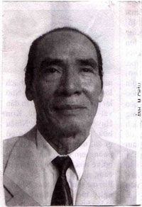
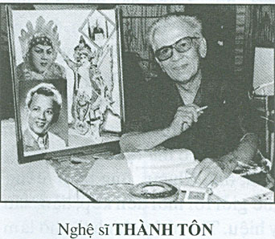
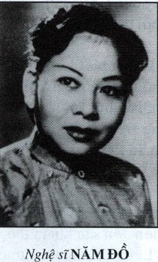
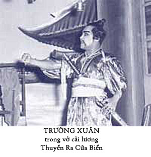

Sau lần đi “coi mắt” vợ, bị nhà gái chê vì tưởng lầm tôi là kép hát cải lương, tôi trở về Saìgòn làm việc, trong bụng định là không bao giờ tôi đặt chân trở lại cái quận Cao Lãnh nữa, một miền quê trù phú, dân chúng hiền lành nhưng dường như nơi đó không có chỗ nào để dung chứa tôi.
Là một thanh niên học hành đỗ đạt, khi ra trường thì được làm việc ngay cho nhà nước, tôi tự hào là mình cũng đẹp trai, không say mê tứ đổ tường, một thanh niên có hoài bão, có tương lai, vậy mà tại sao con gái Cao Lãnh lại chê tôi? Tại sao?
Lòng tự ái bị tổn thương, tôi tự trách là vì tôi không nghe lời ngăn cản của má tôi, theo ông bầu gánh hát Tiến Hóa đi Mỹ Trà, lại còn phụ với ổng đánh trống khua chiêng, rải chương trình của đoàn hát, trong khi mà bên nhà gái còn nặng thành kiến với kép hát, cho là xướng ca vô loại, nên họ từ chối không gả con gái của họ cho tôi. Nhưng tại sao họ không điều tra kỹ? Tại sao họ không tin lời giới thiệu của Dì tôi? Mà dầu cho tôi là kép hát cải lương thật thì có gì là xấu đâu? Nghề hát cải lương cũng là một nghề lương thiện, phải đổ mồ hôi, phải lao tâm nhọc trí đem nguồn vui lại cho khán giả thì mới được khán giả trả thù lao cho. Không phải đi cướp giựt hay lường gạt người khác để thủ lợi, tại sao người ta có thành kiến, coi nghệ sĩ như là những người hư hỏng, những người đứng bên lề của xã hội. Tôi thắc mắc trong lòng nên tôi quyết tâm tìm hiểu cuộc đời và tâm tình của nghệ sĩ để tự giải tỏa những ẩn ức của mình.
Trước đây khi tan sở làm, tôi thường đi đến ga xe điện Cuniac, ngồi ở kiosque bán bia, uống một hai ly bia hơi rồi mới về nhà nghỉ, gần tám giờ tối tôi mới ăn cơm, nhưng từ cái ngày tôi cưới vợ hụt ở Cao Lãnh về, tan sở làm là tôi đến bar Lệ Hoa trước rạp hát Thành Xương để uống bia và quan sát các nghệ sĩ của đoàn hát đang hát tại rạp đó. Cô chủ quán tưởng tôi si cô hầu bàn nên gạ chuyện mối mai nhưng tôi lắc đầu cười trừ nên họ đoán là tôi mê một cô đào hát cải lương nào đó.
– Thầy có thể cho biết là thầy muốn làm quen với ai trong gánh hát nầy không? Tôi quen với nhiều đào, kép hát nên tôi có thể giới thiệu cho thầy.
Bà chủ quán muốn tấn ơn với người khách rượu… Tôi nói tôi muốn quen với một cô đào hát… Khi nhắc tới đào hát, tôi chợt nhớ đến đôi mắt rất buồn của cô Quyên trong ngày tôi đi coi mắt cô ở xã An Bình. Thuận miệng tôi đọc luôn mấy câu thơ:
Đôi mắt em lặng buồn
Nhìn thôi mà chẳng nói
Tình đôi ta vời vợi
Có nói cũng không cùng.
Em là gái trong khung cửa
Anh là mây bốn phương trời
Anh theo cánh gió chơi vơi
Em vẫn nằm trong nhung lụa.
Bà chủ quán vỗ tay cười lớn rồi nói:” Tôi biết là ai rồi! Cô Lệ Thơ! Cô Lệ Thơ có đôi mắt rất buồn, đôi mắt ngây thơ và lúc nào cũng như đẫm lệ nên các anh ký giả mới tặng cho cô nghệ danh là Lệ Thơ.”
Bà nhìn thấy cô Lệ Thơ đứng trước cửa rạp hát, bà gọi lớn:
– Lệ Thơ… Lệ Thơ! Có thầy nầy muốn kiếm cô nè.
Nữ nghệ sĩ Lệ Thơ bước tới kéo ghế ngồi đối diện với tôi:
– Thầy kiếm tôi có chuyện gì?

Nghệ sĩ Tám Cao
Nghệ sĩ Tám Cao cũng bước hỏi: ” Chuyện gì vậy em?.” Rồi anh day qua hỏi tôi: ” Thầy kiếm vợ tôi chi vậy?”
– Trời đất! Tôi đâu có kiếm vợ anh… mà tôi cũng chưa hề quen biết hay nói chuyện gì với chị … Tôi đang thất tình, bà chủ quán hỏi tôi, tôi nói tôi nhớ một cô gái có đôi mắt buồn. Vậy rồi bà chủ quán kêu chị Lệ Thơ lại, nói đôi mắt của chị lúc nào cũng như đẫm lệ… Cái chữ Lệ đó ám ảnh tôi, tôi chưa biết phải ăn nói làm sao với “chỉ” thì anh đến…
– Bây giờ thì thầy biết phải nói gì rồi chứ?
– Biết… Biết… Bà chủ quán… Cho hai chai bia… tôm khô, củ kiệu, đậu phộng rang … Mời anh… mời chị cạn ly, tụi mình kết bạn, vậy được hông?
– Thầy cũng nhanh trí, mau miệng… và chịu chơi!… tụi nầy đùa với thầy thôi…
– Trước hết, xin anh tha cho tôi cái tiếng kêu thầy đó đi. Tôi tên Phương…anh chị cứ kêu là thằng Phương là được rồi…
Trong lúc nhậu lai rai, tôi kể lại cái chuyện tôi đi coi mắt vợ và bị bên nhà gái chê. Tôi nhớ cô Quyên, cô gái có đôi mắt buồn đó và tôi đặt tên cô ta là Lệ Quyên. Bà chủ quán Lệ Hoa mới kêu chị Lệ Thơ lại để phá tôi…
Anh Tám Cao cười, nói:
– Nếu anh muốn kiếm một cô nào có tên bắt đầu từ chữ Lệ thì trong gánh hát Tiếng Chuông của ông Bầu Cang nầy cũng có cả chục người tên Lệ…
– Có cả chục người tên Lệ?
– Phải! Cả chục! Tôi kể anh nghe: Lệ Thơ là vợ tôi đây, đào lẳng. Có Lệ Hoa, Lệ Uyển, là đào ca. Thúy Lệ đào độc. Lệ Tuyền, Lệ Thẳm, Lệ Mi, Lệ Hoa, Mỹ Lệ và Ngọc Lệ là vũ nữ và đào con…
– Hỏng lẽ hết tên để đặt…sao người nào cũng kèm theo một cái tên Lệ đó vậy…
– Trong đoàn hát, thường là các nghệ sĩ đàn em lấy tên chữ đầu của người thầy hay nghệ sĩ đàn anh mà họ muốn bắt chước theo lối hát hay giọng ca để mà đặt thành chữ đầu của tên họ. Ví dụ mấy đứa có tên chữ Lệ vừa kể nó là đệ tử của Lệ Thơ.
Tôi tên Tám Cao, tôi học theo cách ca luyến láy của nghệ sĩ Tư Thanh Tao, nên được đặt tên là Thanh Cao, sau đó có các nghệ sĩ danh ca như Thanh Sơn, Thanh Ngàn, Thanh Minh, Thanh Tùng, Thanh Lệ, Thanh Tuyền, Thanh Trúc…Thanh Việt, Thanh Thanh vì họ ca vọng cổ có hơi giống anh Thanh Tao và tôi. Nói một cách nôm na là những người có tên Thanh đứng đầu là cùng chung một lò nghệ sĩ, một kỹ thuật ca….
– Anh nói tôi hiểu rồi, như nghệ sĩ Út Trà Ôn thì có các nghệ sĩ học theo lối ca của ảnh là nghệ sĩ Út Hiền, Út Hậu, Út Thôi, Ut Trà Vinh, Út Bạch Lan…Nghệ sĩ Kim Chưởng thì có các đệ tử là Kim Nga, Kim Hoàng, Kim Ngân, Kim Ngà, Kim Ngọc, Kim Luông, Kim Lành, Kim Cương…Nhưng theo tôi nghĩ thì có thể tìm những tên khác nghe hay hơn, lạ hơn là rập khuôn với nhau một chữ đầu.
Tám Cao vỗ vai tôi rồi lựa lời nói:
– Anh không phải là người trong nghề nên không hiểu việc chọn chữ đầu của tên nghệ sĩ nó rất là quan trọng. Nó biểu lộ một tinh thần Tôn Sư Trọng Đạo, Uống Nước Nhớ Nguồn. Người sau học của người đi trước cách ca, cách luyến láy, cách diễn nên dùng cái tên chữ lót của thầy làm tên chữ lót của mình để tỏ lòng biết ơn, để biểu lộ ý muốn theo con đường nghệ thuật của thầy, chớ không phải vì nghèo chữ, thiếu văn chương, không thể tìm cho mình một cái tên nào khác lạ hơn là tên người thầy của mình.
Câu nói của anh Thanh Cao làm cho tôi phải suy nghĩ. Những người nghệ sĩ tuy họ sống một cuộc đời phiêu bạt, không biết trước ngày mai sẽ no ấm hay thiếu thốn nhưng họ là những người có lòng với nhau, biết đùm bọc lẫn nhau và có một tinh thần biết nghĩa biết ân, biết tôn sư trọng đạo. Đó là cái tính quần thể đáng quý, biểu lộ tình thương yêu và quy củ tôn ti trật tự trong đoàn hát, truyền thống đạo đức của những phường, hội, làng, xã Việt Nam. Nếu đem so sánh với cuộc sống xô bồ xô bộn của một số người đang tìm cách triệt hạ lẫn nhau để mà dành đất sống thì tư cách của người nghệ sĩ đáng được đánh giá cao hơn một bậc.
Chị Tám Cao tức nữ nghệ sĩ Lệ Thơ từ nãy giờ uống bia, lên tiếng hỏi tôi:
– Tại sao anh Phương chú ý tới nghệ danh của nghệ si?”
– Vì nghệ danh của nghệ sĩ đẹp, nghe hay hay hơn tên của một người dân bình thường. Bây giờ nghe anh Tám Cao nói tôi mới biết những chữ đầu tên của nghệ sĩ giống nhau vì họ tự nhận là cùng một lò nghệ sĩ, hát giống nhau, ca giống nhau, nhưng…
– Nhưng sao? Anh Phương chắc còn nhiều băn khoăn thắc mắc, cứ nói ra đi. Bữa nay vợ chồng tôi không có tuồng, anh Tuấn Sĩ hát thế cho tôi… tụi mình nói chuyện tào lao chơi tới khuya cũng được.
Tôi kêu thêm bia và mời hai anh chị dùng cơm đĩa với tôi tại Bar Lệ Hoa. Trong khi dùng bữa, tôi có chỗ không hiểu về việc tự chọn nghệ danh của nghệ sĩ. Tôi hỏi anh Tám Cao:
– Tại sao những người nghệ sĩ tiền phong thì tên có kèm theo một cái thứ như tên bình thường của người dân. Ví dụ: nghệ sĩ Năm Châu, Tư Chơi, Ba Vân, Hai Nữ, Bảy Phùng Há, Sáu Ngọc Sương, Tư Thanh Tùng, Bảy Nam, Năm Kim Thoa, Ba Hui, Tám Lắm, Mười Biểu, Năm Sadec, Năm Đồ, cô Tư Châu, …vân …vân…Các nghệ sĩ tiền phong có nhiều người học giỏi như các anh Năm Châu, Năm Nở, Tư Chơi, Bảy Nhiêu, các ông đó viết tuồng hay, sao mấy ổng không đặt cho mình một nghệ danh như các nghệ sĩ sau nầy mà chỉ khiêm tốn để cái thứ trước tên của mình thôi, nghe như tên một người nông dân Hai Thời, Ba Thế nào đó vậy?
Thấy ông Bầu Cang từ phòng bán vé ra, anh Tám Cao mời ông cùng ngồi uống bia với chúng tôi. Anh Tám Cao nói:
– Muốn biết về các nghệ sĩ lớp trước thì anh Phương nên hỏi ông Bầu vì ông là người lịch duyệt hơn tôi, ông vào nghề cải lương trước hơn tôi.
Tôi mời ông Bầu Cang uống bia hơi nhưng ông từ chối, nói uống bia hơi không tốt, no hơi lớn bụng. Ông kêu một ly cà phê đen không đường, đổ vô một cốc rượu rhum. Bữa nay gánh hát Tiếng Chuông đông nghẹt khách nên ông Bầu Cang rất vui, sẵn sàng trả lời những câu hỏi của tôi.
Ông nói:
– Tôi là nhạc sĩ đàn kìm, đờn cho gánh hát Đại Phước Cương sau đó tôi đi gánh hát Phụng Hảo và “đụng” nhà tôi là nữ nghệ sĩ Năm Phát, đào lẳng, chị ruột của nữ nghệ sĩ Sáu Nết, đào mùi cùng hát chung trong gánh hát Phụng Hảo.
Như anh Phương biết đó: tôi tên Ba Cang, vợ tôi, Năm Phát, em vợ tôi, Sáu Nết, những nhạc sĩ trong đoàn của tôi hay ở các đoàn khác mà tôi quen biết cũng đều có cái tên bắt đầu bằng cái thứ của mình trong gia đình như:
* Các nhạc sĩ đờn kìm Sáu Tửng, Ba Chột, Bảy Phải, Ba Xây, Năm Vĩnh, Năm Cơ, Bảy Hàm, Bảy Trạch, Năm Khạp;
* Các nhạc sĩ đàn cò và thổi ống tiêu: Tư Huyện, Hai Phát, Chín Trích, Sáu Xíu, Năm Bửu..;
* Các nhạc sĩ đàn tranh và guitare phím lõm: Tư Còn, Sáu Quí, Bảy Bá, Bảy Quới…:
* Các nhạc sĩ đàn violon, violoncelle có Tư Hiệu, Tư Thưởng, Hai Long, Hai Thơm.
Có cái thằng Văn Vĩ đàn guitare… hỏng biết tại sao nó xọt cái chữ Văn vô trước cái tên của nó. Nó thứ hai, lẽ ra là kêu thằng Hai Vĩ…
Ông Ba Cang cho biết nhiều nhạc sĩ dùng cái thứ của mình đứng trước cái tên do cha sanh mẹ đẻ đặt cho chớ ông không giải thích tại sao.
Sau nầy khi tôi gia nhập vô làng hia mão, tôi đem cái thắc mắc đó để hỏi anh Năm Châu thì anh Năm giải thích:
“Cái thời của tụi tôi mà các bạn trẻ bây giờ gọi là nghệ sĩ tiền phong.. Cái thời đó thì chưa ai biết tự mình nên chọn tên gì để làm nghệ danh. Tên là do ông Bầu gánh hát đặt ra để dễ quảng cáo cho tuồng hát và gánh hát. Tôi tên Nguyễn Thành Châu, ông bầu gánh lúc đó là thầy Năm Tú đặt cho tôi tên Năm Châu vì tôi thứ năm trong gia đình. Anh Trần Hữu Trang thành tên Tư Trang; Huỳnh Năng Nhiêu thành tên Bảy Nhiêu; Lê Văn Cao thành Bảy Cao; Lư Hòa Nghĩa thành Năm Nghĩa; Lê Văn Vân thành Ba Vân, Lê Hoài Nở thành Năm Nở…Nguyễn Phương Danh thành Tám Danh… ”
Tôi hỏi về tên của các cô đào hát, anh Năm Châu có nói một số trường hợp ngoại lệ như:
“Cô Phùng Há, gọi là Bảy Phùng Há vì cô là người Tàu lai, cái tên Phùng Há là âm cái tên Phụng Hảo; cô Kim Thoa là người Tiều lai nên cũng gọi là Năm Kim Thoa; cô Tư Thanh Tùng thì khi mới đầu ông Bầu Ngọc Cương gọi là Tư Tùng nhưng khi nói mau, nghe như là ” tiêu tùng” nên ông thêm cái chữ Thanh đằng trước thành ra tên Tư Thanh Tùng. Đa số vẫn là kềm cái thứ trong gia đình đứng trước cái tên như cô Ba Đắc, cô Năm Cần Thơ, cô Ba Trà Vinh, cô Ba Bến Tre, cô Sáu Nết, Hai Nữ, Sau Ngọc Sương, Ba Hui, Sáu Trâm, Tư Sạng, Năm Đặng, Năm Phỉ, Bảy Nam, Mười Truyền, Chín Bia, Năm Đồ, Bảy Sự, Tư Châu, …”
Anh Năm Châu có nhắc lại một giai thoại về anh Ba Du. Anh Ba Du tên thật là Phan Văn Hai, lúc đầu lấy tên là Ba Hai (anh thứ Ba, tên Hai). Khi đoàn hát Phước Cương hát ở rạp Quảng Lạc Hà Nội năm 1938, ông bầu Cương có mướn hai anh võ sĩ Tư Xum và Sáu Mẹo gác cửa để ngăn cản bọn du côn không cho vô coi hát cọp hay tới gây rối đoàn hát.
Hồi đó, lính mã tà người Việt( tức là cảnh sát) rất ngại việc va chạm tới bọn du côn chuyên đâm thuê chém mướn. Lính mã tà thường ngoảnh mặt làm ngơ trước hành động côn đồ của bọn nầy để khỏi chuốc rắc rối vào mình. Lính Biện Tây và Biện Chà cũng vậy, nên đoàn hát nào cũng có mướn người biết võ nghệ gác cửa rạp hát để bảo vệ việc làm ăn của mình và sự an toàn cho nghệ sĩ. Khi đoàn hát Phước Cương hát ở rạp Quảng Lạc, bọn du côn ở ngã Tư Sở tới quấy phá, chúng bị hai võ sĩ Tư Xum và Sáu Mẹo đánh cho một trận bể đầu sứt trán. Chúng tìm cách trả thù bằng cách đón đường đánh nghệ sĩ.
Bữa đó hai nghệ sĩ Ba Hai và Năm Thiên nghe đồn ở ngã tư Khâm Thiên có hát cô đầu, nhân được nghỉ hát (vì hai anh không có vai hát trong đêm đó), hai anh kêu xe kéo chở đến Khâm Thiên chơi cho biết. Bọn du đãng biết tin, chận xe kéo lại, kiếm chuyện gây gổ. Hai anh tự xưng tên là kép hát Ba Hai và Năm Thiên vì tưởng là bọn du côn kiếm lầm người không ngờ là du đãng tính đánh nghệ sĩ để trả thù nên khi anh Ba Hai kể tên mình, chúng nó cho là anh muốn làm cha chúng nó (Ba Hai) và thằng kia muốn làm trời (tên Năm Thiên) nên chúng nó để thẹo cho hết hát.
Nghệ sĩ Ba Hai và Năm Thiên khi đi chơi riêng rẽ thì đề phòng, sợ bị du đãng hành hung nên hai anh mang mình võ khí phòng thân. Võ khí của hai anh là chiếc vớ laine đựng hàng trăm đồng xu, cột chặt lại thành như một quả chùy đồng. Khi tự vệ thì anh cầm chiếc vớ, quật mạnh quả chùy mặt, vào đầu địch thủ. Hai anh Ba Hai và Năm Thiên giỏi võ từng lên đấu võ đài ở Sàigòn nên khi có võ khí đặc biệt trong tay và lợi dụng cái thế bất ngờ, đã đánh bể đầu sáu tên du côn. Tên kéo xe cũng là đồng bọn của đám du côn đó nên cũng một chùy vào mặt, đổ máu mũi.
Năm Thiên giựt xe kéo, nhảy lên xe ngồi, Ba Hai kéo chạy trốn và hai anh luân phiên nhau, kẻ ngồi người kéo, chạy gần tới rạp Quảng Lạc mới bỏ chiếc xe kéo bên vệ đường chạy về đoàn hát.
Người chủ của chiếc xe kéo thưa với bót Tây là người của gánh hát đã cướp chiếc xe và đánh bể đầu anh kéo xe, hai người Biện Tây đến rạp hát xét kiếm chiếc xe kéo nhưng không thấy.
Ông Bầu Nguyễn Phước Cương có đi du học ở Pháp nhiều năm và anh Năm Châu cũng giỏi tiếng Pháp nên hai anh nới chuyện với hai người Biện Tây, kể rõ sự khuấy phá an ninh trật tự của bọn du đãng. Hai anh cho biết tất cả diễn viên của đoàn đều có mặt hát trên sân khấu, không có người nào đi ra khỏi rạp hát, việc thưa người của gánh hát cướp xe chỉ là phao vu thôi. Khi xét không thấy có tang vật và những người trong gánh hát chứng minh được là họ có mặt tại rạp hát, không có ở hiện trường khi xảy ra vụ mất chiếc xe kéo và quan trọng hơn hết là bọn Biện Tây thấy ông Bầu Cương và Năm Châu nói tiếng Pháp quá giỏi nên không xét tới lời thưa gởi của chủ chiếc xe kéo và anh kéo xe.
Từ đó, bọn du côn không dám tới quấy phá đoàn hát nữa.
Sau chuyến lưu diễn ở Hà Nội về, ông bầu Cương đổi tên Phan Văn Hai thành tên Ba Du, nghĩa là Ba (cha) của mấy thằng du côn.
Ông Bầu Cang cũng kể cho tôi nghe chuyện liên quan tới việc đặt tên nghệ sĩ. Ông có theo gánh hát đi hát ở Hà Nội, Thái Nguyên, Huế, Nha Trang, Đàlạt, Buôn Mê Thuột, ở xứ Lào và Cao Miên, ông có ý thức quan sát nên nhận xét những chuyện trong các gánh hát rất là tinh tế.
Ông Bầu Cang nói là nghệ sĩ Bắc Kỳ đặt tên của họ hay hơn nghệ sĩ Nam Kỳ. Từ những năm 1920 đến năm 1935, nghệ sĩ cải lương ở miền Nam đặt nghệ danh cho mình bằng cách dùng tên thiệt, kèm theo cái thứ trong gia đình. Dầu là do ông Bầu gánh đặt tên cho hay là nghệ sĩ tự chọn tên mình thì cũng theo cái thể thức vừa kể. Do đó, ngày nay khi nhắc lại các nghệ sĩ tiền phong thì chúng ta nhớ đến các tên như Năm Châu, Tư Chơi, Bảy Nhiêu, Sáu Nết, Ba Trà Vinh, Năm Cần Thơ, Năm Phỉ, Bảy Phùng Há, Ba Hui, Năm Kim Thoa, Bảy Nam, Mười Truyền, Chín Bia, Hai Vân, Ba Vân, Tám Vân, Năm Nở, Tư Xe, Ba Du, Tám Danh, Tám Củi, Ba Thâu, Tám Mẹo…
Tên của nghệ sĩ nghe mộc mạc như tên của các tay công tử, các anh chị bự thời đó: Vua cờ bạc Sáu Ngọ, Hắc công tử Ba Qui, Bạch công tử Hai Phước (tức Phước Georges), cậu Hai Miên, thầy Sáu Trọng… các tay du côn anh chị đứng bến Ba Thẹo, Sáu Búa, Hai Mỏ lết, Tư Xe, Ba Chăn Cà Mum…vân… vân…
Cũng trong thời gian nầy thì nghệ sĩ cải lương ở miền Bắc (đông nhất là ở Hà Nội) có các tên đẹp như nữ nghệ sĩ: Ái Liên, Kim Chung, Bích Hợp, Bích Thuận, Bích Châu, Khánh Hợi, Túy Định, Ánh Tuyết, Mộng Điệp, Thúy Liễu, Ánh Tuệ, Anh Thư… Các nam nghệ sĩ có tên Huỳnh Thái, Anh Đệ, Sĩ Hùng, Tuấn Sửu, Phúc Lai, Thành Hội, Mộng Long, Ngọc Thạch, Mộng Hùng, Sĩ Tiến…
Cũng theo lời kể của ông Bầu Ba Cang gánh hát Tiếng Chuông, năm 1921, ở Thốt Nốt, tỉnh Long Xuyên có ông Bầu Vương Có, người Tiều Lai lập gánh hát cải lương Tập Ích Ban.
Ông Vương Có mời soạn giả Mộc Quán Nguyễn Trọng Quyền làm thầy tuồng (cung cấp tuồng tích và dạy cho nghệ sĩ hát, ca). Tổ chức gánh hát theo lối hát Tiều, tên đào kép là do ông Vương Có và thầy Mộc Quán Nguyễn Trọng Quyền đặt cho, mới nghe tên tưởng như là những nghệ nhân Trung Hoa:
* Nghệ sĩ Bảy Nhiêu được đặt tên là Lâm Sinh,
* Tư Thới tên Dương Hòa,
* Năm Chuông đổi thành Đại Hồng,
* Năm Hí đổi thành Song Hỉ,
* Sáu Tị thành Tần Vân,
* Sáu Trâm thành Ngọc Xoa,
* Hai Hiển thành Kiều My,
* Ba Vinh thành Kiều Loan…
* Sáu Trâm thành Ngọc Xoa (là người vợ đầu tiên của anh Năm Châu).
Từ năm 1954 đến năm 1970, thời kỳ hoàng kim của sân khấu cải lương, nhờ ảnh hưởng của một nền văn hóa mới và báo chí thời đại, nghệ sĩ đã biết chọn cho mình một nghệ danh đẹp, không còn kềm cái thứ kế bên tên cúng cơm của mình. Những tên mới như Hữu Phước, Hùng Cường, Thành Được, Út Trà Ôn, Văn Hường, Út Hiền, Út Hậu, Minh Vương, Minh Phụng, Minh Cảnh, Bạch Tuyết, Thanh Nga, Ngọc Giàu, Hồng Nga, Lệ Thủy, Mỹ Châu, Kim Ngọc, Kim Hoa, Thanh Hằng, Thanh Ngân, Hoàng Giang, Kim Giác, Việt Hùng, Ngọc Nuôi, Minh Chí, Ánh Hoa… những tên nghệ sĩ mới gắn liền với giọng ca đặc sắc và lối diễn xuất tinh tế đã trở thành thần tượng của khán giả mộ điệu.
Sau năm 1970, những nghệ sĩ mới lên, nhại theo kỹ thuật ca của các danh ca đàn anh, đàn chị nên họ chọn cho mình một nghệ danh có ba chữ mà chữ tên đầu gắn liền với tên của nghệ sĩ danh ca mà họ ưa thích. Chúng ta thấy có các tên: Thanh Thanh Hoa, Thanh Thanh Nga, Thanh Thanh Tâm, Thanh Kim Huệ, Dũng Thanh Lâm, Dũng Minh Sang, Dũng Minh Tuyết, Kiều Mai Lý, Kiều Lệ Mai, Kiều Lệ Tâm, Kiều Phượng Loan, Kiều Trúc Phượng, Minh Minh Vương, Minh Minh Cảnh, Minh Minh Tâm, Phương Trúc Bình, Phương Hồng Thủy, Phương Hồng Hạnh, Kim Tử Long, Kim Tiểu Long, Hoài Trúc Phương, Lý Cẩm Hồng, Kim Lệ Thủy, Tất My Loan, Trương Ánh Loan..
Nghệ sĩ Thanh Cao thấy tôi lắng nghe ông Bầu Cang kể về các nghệ danh của nghệ sĩ, xen vào nói:
– Anh Phương nếu theo ghe hát như tụi tui, anh cũng phải chọn cho anh một cái tên nghệ sĩ nghe cho nó hay, biết đâu sau này tên nghệ sĩ của anh sẽ được hậu thế nhắc nhở.
Tôi bật cười lớn:
– Anh khéo suy nghĩ viễn vông! Phải có giọng ca, phải có sắc vóc đẹp, phải có một tâm hồn nghệ sĩ thì mới có hy vọng trở thành nghệ sĩ. Tôi rất ái mộ nghệ sĩ, tôi thấy thích nghe kể chuyện nghệ sĩ vì mỗi một câu chuyện là một giai thoại vui hay buồn, tuy nhiên từ cái ý thích đó, muốn trở thành nghệ sĩ thì còn một khoảng cách rất xa… rất là xa…
Tuy tôi nói vậy nhưng trong thâm tâm, tôi bắt đầu dệt mộng, tự phác họa cho mình một bước đường tương lai trong giới nghệ sĩ sân khấu cải lương. Những khung trời mới rộng mở trước mắt tôi. Những con người rực sáng ánh hào quang danh vọng dưới ánh đèn sân khấu đêm đêm quyến rũ tôi, tôi quên mất cái việc tôi đi cưới vợ hụt chỉ vì bị cái thành kiến xướng ca vô loại. Tôi kết bạn với những nghệ sĩ sân khấu để tìm hiểu họ, để sống với tâm tư và nguyện vọng của một người nghệ sĩ. Ngoài các anh Ba Cang, Thanh Cao, Trường Xuân, tôi kết bạn với Thành Tôn, Hữu Thoại, tôi theo làm quen với anh Minh Tơ, chị Tư Châu, cô Năm Đồ…


.
.Từng bước… từng bước, tôi bị lạc vào “mê cung ” đầy ánh hào quang và sắc màu rực rỡ của sân khấu cải lương.